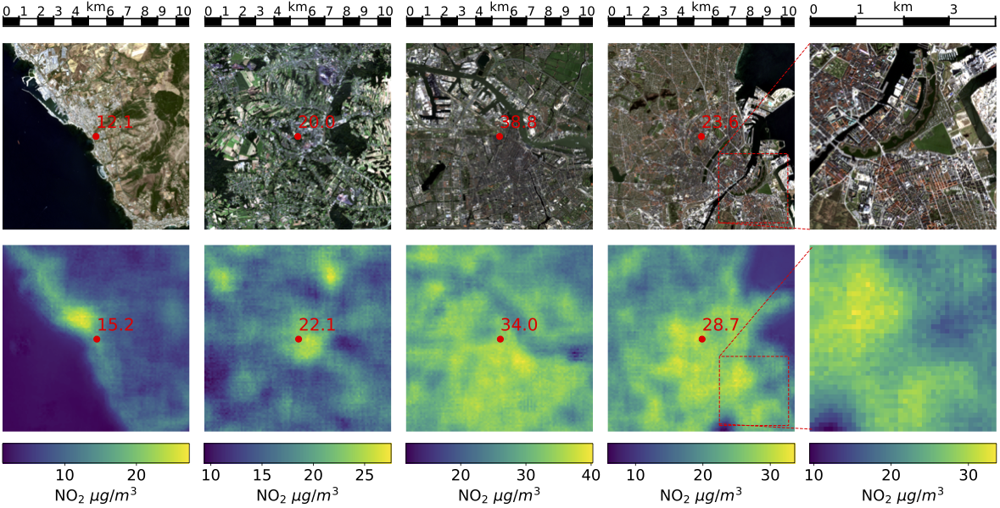

Exposure to air pollution has been shown to lead to adverse health effects. A major air pollutant is NO2, which, at the surface level, directly affects human health, and, at higher elevations, contributes to acidic rain and represents a precursor to greenhouse gases. While NO2 column densities in the atmosphere can be measured with satellite observations as provided by Sentinel-5P, it requires in-situ measurements from ground stations to measure NO2 concentrations on the surface level, which is relevant to human exposure.
Our student Linus Scheibenreif investigated whether it would be possible to approximate surface level NO2 from remote sensing observations only, providing a tool to estimate human exposure to NO2 on a useful spatial and temporal scale. In his two publications, Linus showed that
- it is possible to interpolate surface level NO2 exposure between measurements provided by EEA ground stations based on different types of features (Scheibenreif et al. 2021a), and
- we can combine satellite imagery with atmospheric trace gas column density measurements to estimate surface level NO2 concentrations with high spatial resolution and intermediate temporal resolution (Scheibenreif et al. 2021b).
{kind=link}

Learn more about Linus’ projects in these blog articles: A Novel Dataset for the Prediction of Surface NO2 Concentrations from Remote Sensing Data and Estimation of Air Pollution with Remote Sensing Data: Revealing Greenhouse Gas Emissions from Space. His results have also been summarized in a IEEE Transactions on Geoscience and Remote Sensing journal paper (see below).
Resources
-
Scheibenreif, L., Mommert, M., Borth, D., “Towards Global Estimation of Ground-Level NO2 Pollution with Deep Learning and Remote Sensing”, IEEE Transactions on Geoscience and Remote Sensing, 2022, publication, open access.
-
Scheibenreif et al. 2022 Dataset: zenodo
-
Scheibenreif et al. 2022 Code: GitHub
-
Scheibenreif, L, Mommert, M., Borth, D., “Estimation of Air Pollution with Remote Sensing Data: Revealing Greenhouse Gas Emissions from Space”, ICML 2021 Tackling Climate Change with Machine Learning Workshop; publication (open access).
-
Scheibenreif, L. , Mommert, M., Borth, D., “A Novel Dataset and Benchmark for Surface NO2 Prediction from Remote Sensing Data Including COVID Lockdown Measures”, IEEE International Geoscience and Remote Sensing Symposium 2021 (IGARSS 2021); publication.